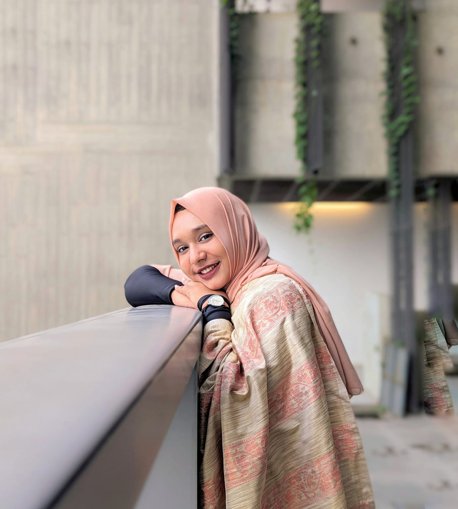

Welcome to My Portfolio
Hi, I'm Nabila Islam Borno, a CSE graduate with a passion for software development, AI, and IT support. I specialize in building efficient and innovative solutions.
About Me
I'm a freshly graduated Computer Science and Engineering (CSE) student from BRAC University, with hands-on experience in software development, machine learning, and IT support. I’ve worked on projects like a password-checking tool built with assembly language, and I’m passionate about improving urban planning through AI and drone imagery.
Education
- BRAC University — Bachelor of Science in Computer Science and Engineering (CGPA: 3.13) [Passing Year: 2024]
- SOS Hermann Gmeiner College Dhaka — HSC, Science (GPA: 5.00)
- Shaheed Bir Uttam Lt Anwar Girls' College — SSC, Science (GPA: 5.00)
Skills
- Programming Languages: Python, Java, C, JavaScript
- Database: SQL, MySQL
- Integrated Development Environments (IDEs): PyCharm, Visual Studio, Git, GitHub
- Web Development: HTML, CSS, JavaScript
- Web Frameworks: Basic knowledge of Django, Laravel (Learning)
- Data Analysis: Basic understanding of data analysis techniques
- Data Structures & Algorithms: Fundamental concepts like arrays, linked lists, stacks, queues, trees, sorting, and searching algorithms
- Machine Learning: Introductory knowledge of ML and computer vision concepts
Projects/Thesis
- Advanced School Management System
- Advanced Book Shop Management System
- Advanced Fire and Smoke Detection System
- Password Checking Tool using Assembly Language for Secure Authentication
- CNN-based Approaches for Contextual Hate Speech Detection
- A Comparative Study of Business Intelligence and Artificial Intelligence with Big Data Analytics
Thesis
Enhancing Infrastructure Detection Using Drone Imagery: A Comparative Analysis Using Machine Learning Models with a Custom Bangladesh-Based Dataset for Improved Urban Planning
Developed a dataset and applied machine learning models to improve infrastructure detection, aimed at supporting urban planning efforts in Bangladesh.